This section provides details on the structure and composition of Syncfusion Essential Studio dashboard. It also elaborates on navigating our dashboard to access various utilities and product samples.
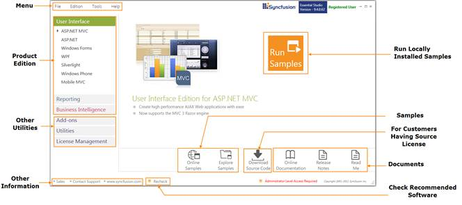
Figure 103: Dashboard
The dashboard structure can be split into the following:
Menu
Menu comprises the menu bar which accommodates four menus:
1. File - Allows you to exit the dashboard, which can alternatively be done by clicking on the right top corner of dashboard.
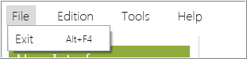
Figure 104: File
2. Editions - Allows you to access the products under each edition. Also, provides access to view local and online product samples. It allows you to access the online documentation, release notes and read me documents for the respective products.
This can alternatively be accessed using the Product Editions section on dashboard.
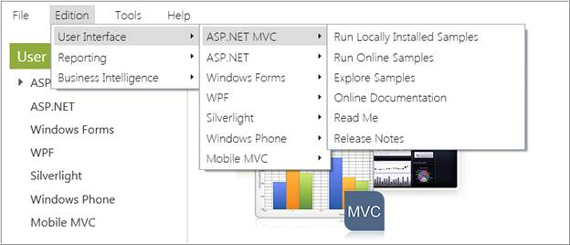
Figure 105: Editions
3. Tools - Allows you to access the add-ons and utilities available for various platforms and products. Also, allows you to manage assemblies and license. The Toolbox configuration allows you to choose from various Visual Studio versions to be installed apt for you system configuration. This can alternatively be accessed through Utilities & Documentation section.
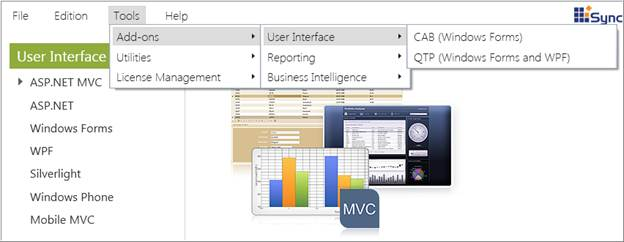
Figure 106: Tools
4. Help - Allows you to access the information on the current installed version by clicking About. Also, you can access the Direct-Trac support page over internet.
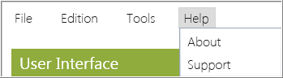
Figure 107: Help
Product Editions
This section allows you to access the product samples available. There are three product editions offered namely:
1. User Interface
User Interface lists complete set of components for Windows and Web development supported under various platforms. They help you implement professional user interfaces in your applications. Currently, products under the following platforms are supported. For detailed list of the products, refer to the individual UGs.
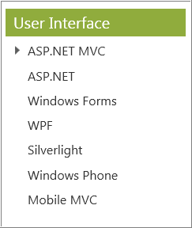
Figure 108: User Interface
2. Reporting
Reporting lists the products useful for creating advanced reports under various platforms. Currently, products under the following platforms are supported. For detailed list of the products, refer to the individual UGs.
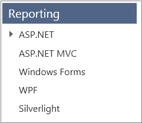
Figure 109: Reporting
3. Business Intelligence
Business Intelligence lists the products useful for performing business intelligence analysis and creating professional dashboards using relational and OLAP data, under various platforms. Currently, products under the following platforms are supported. For detailed list of the products, refer to the individual UGs.
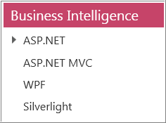
Figure 110: BI
Accessing Product Samples
The Syncfusion provides lots of online and local samples for better understanding of the controls. You can access them as illustrated in the following steps:
1. Open Syncfusion Dashboard.
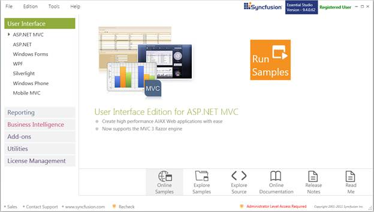
Figure 111: Dashboard
2. Select the required edition. The platforms under the same will be displayed.
3. Select the required platform. Options for the concerned platform will be displayed at the right.
4. Click any of the following to know more about the selected product:
· Run Samples to run the locally installed samples.
· Online Samples to view online samples.
· Explore Samples to open local installed location.
· Explore Source to view the source, if you have installed the source add-on setup
· Online Documentation to view the documentation help contents for the respective products
· Release Notes to view the release notes content
· Read Me to view the read me content
 Note: You can explore source only when you have
Source licence and installed the source add-on setup.
Note: You can explore source only when you have
Source licence and installed the source add-on setup.
Checking Pre-requisites
You need to install a list of prerequisite for all the products to work successfully. If some of the software are not installed Dashboard will display an alert. Click the Missing Software, Recommended Software dialog box will open.
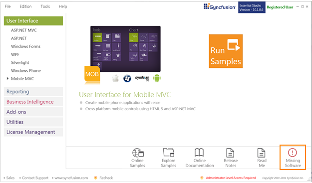
Figure 112: Missing Software
Recommended Software
Recommended Software will list the prerequisites for all platforms. A symbol appears if all recommended software for the platform is installed in your system. A symbol appears if any recommended software for a platform is not installed in your system before installing Essential Studio.
Recheck option will recheck the prerequisites list and refresh the currently installed software list.
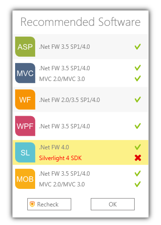
Figure 113: Recommended Software
Other Utilities
This section allows you to access the following:
· Add ons-This lists the Add-on utilities that will help the user to utilize additional product services from Syncfusion. All the three editions offer different add-ons for users.
· Utilities- This accordion set displays the common utilities for all editions:
· Toolbox Configuration-This installer allows you to configure Syncfusion controls for various .NET frameworks in combination with compatible Visual Studio versions.
· Assembly Manager-This utility allows the user to manage installation and uninstallation of Syncfusion Essential Studio assemblies in the GAC and in the Assemblies folders.
· Build Management – This utility allows you to build or debug assemblies using the source installed in the Essential Studio’s installed location.
· Documentation-This provides access to view the online documentation and installed documentation.
· License Manager-This allows you to manage the licensing information such as the validity of license key and also the products that are licensed with this key.
· License Agreement – This allows you to navigate to the Software License Agreement.
Other Information
Other information available in the dashboard is:
· Messages - This section allows you to view the user registration information i.e. whether the user is registered or not.
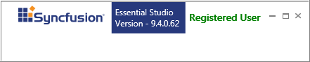
Figure 114: Message
· Sales FAQ - Clicking this link directs you to FAQ page, which lists common sales related queries and other sales contact information.
· Contact Support - Clicking this link directs you to Direct-Trac Login page to contact our support team.
· Website - Clicking this link directs you to Syncfusion website.